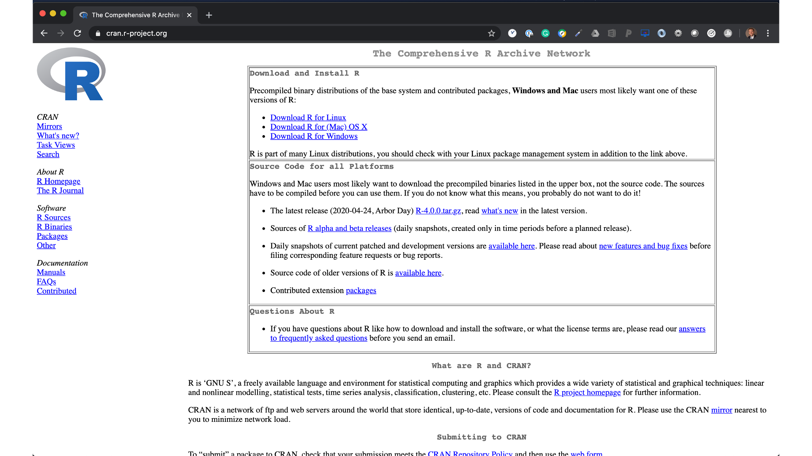
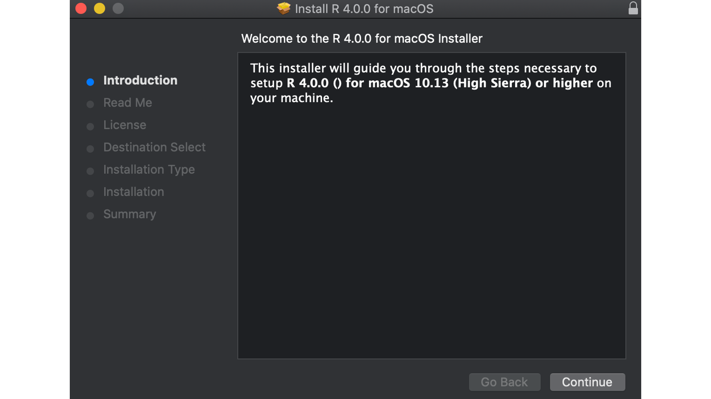
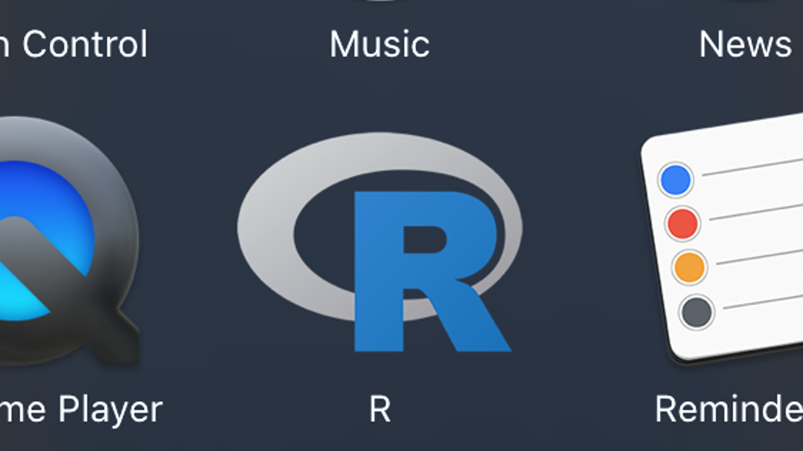
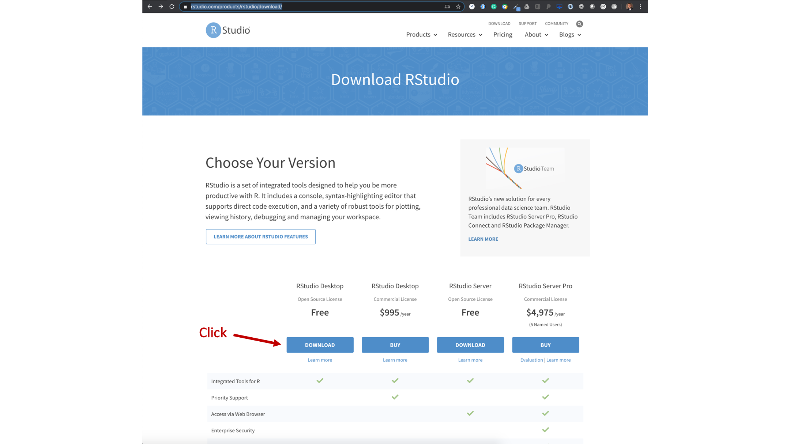
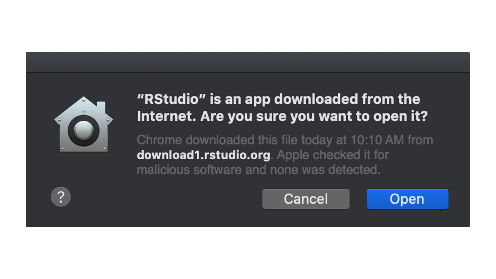
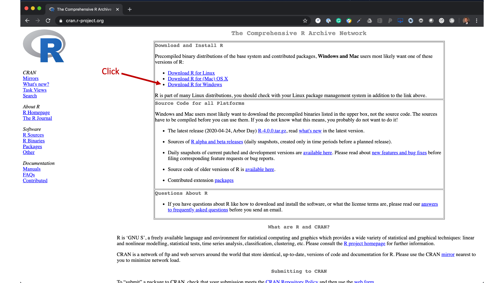
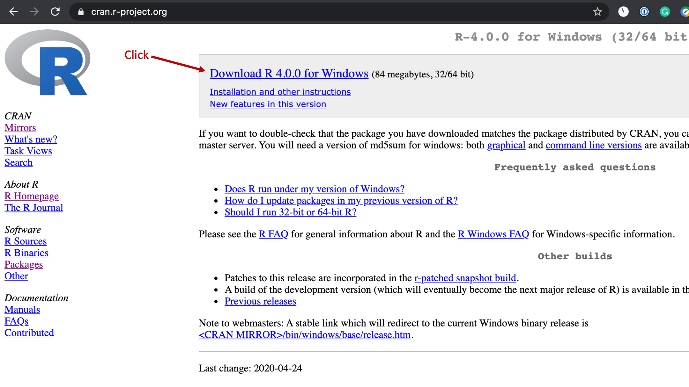
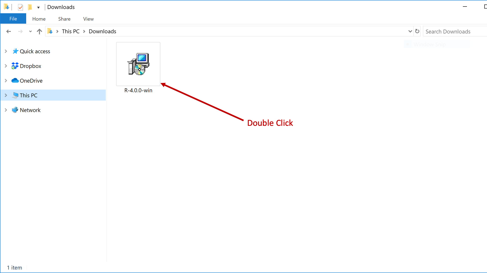
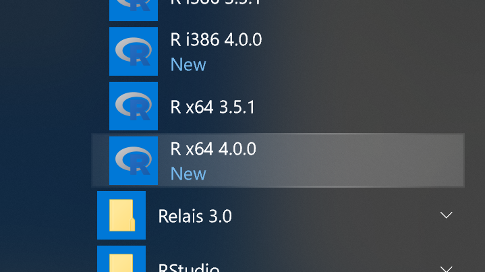

2 Installing R and RStudio
Before we can do any programming with R, we first have to download it to your computer. Fortunately, R is free, easy to install, and runs on all major operating systems (i.e., Mac and Windows). However, R by itself is not nearly as easy to use as when we combine it with another program called RStudio. Fortunately, RStudio is also free and will also run on all major operating systems.
At this point, you may be wondering what R is, what RStudio is, and how they are related. We will answer those questions in the near future. However, in the interest of keeping things brief and simple, I’m not going to get into them right now. Instead, all you have to worry about is getting the R programming language and the RStudio IDE (IDE is short for interactive development environment) downloaded and installed on your computer. The steps involved are slightly different depending on whether you are using a Mac or a PC (i.e., Windows). Therefore, please feel free to use the navigation panel on the left-hand side of the screen to navigate directly to the instructions that you need for your computer.
Important note: In this chapter, I cover how to download and install R and RStudio on both Mac and PC. However, I personally use a Mac; therefore, the screenshots in all following chapters will be from a Mac. The good news is that RStudio operates almost identically on Mac and PC.
Step 1: Regardless of which operating system you are using, please make sure your computer is on, properly functioning, connected to the internet, and has enough space on your hard drive to save R and RStudio.
2.1 Download and install on a Mac
Step 2: Navigate to the Comprehensive R Archive Network (CRAN), which is located at https://cran.r-project.org/.

Step 3: Click on Download R for (Mac) OS X.

Step 4: Click on the link for the latest version of R. As you are reading this, the newest version may be different than the version you see in this picture, but the location of the newest version should be roughly in the same place – the middle of the screen under “Latest release:”. After clicking the link, R should start to download to your computer automatically.

Step 5: Locate the package file you just downloaded and double click it. Unless you’ve changed your download settings, this file will probably be in your “downloads” folder. That is the default location for most web browsers. After you locate the file, just double click it.

Step 6: A dialogue box will open and ask you to make some decisions about how and where you want to install R on your computer. I typically just click “continue” at every step without changing any of the default options.

If R installed properly, you should now see it in your applications folder.

Step 7: Now we need to install the RStudio IDE. To do this, navigate to the RStudio desktop download website, which is located at https://rstudio.com/products/rstudio/download/. On that page, click the download button under RStudio Desktop Open Source License Free.

Step 8: Download the most current version for Mac.

Step 9: Again, locate the dmg file you just downloaded and double click it. Unless you’ve changed your download settings, this file should be in the same location as the R package file you already downloaded.

Step 10: A new finder window should automatically pop up that looks like the one you see here. Click on the RStudio icon and drag it into the Applications folder.

You should now see RStudio in your Applications folder. Double click the icon to open RStudio.

If this warning pops up, just click Open.

The RStudio IDE should open and look something like the window you see here. If so, you are good to go! 🎉

2.2 Download and install on a PC
Step 2: Navigate to the Comprehensive R Archive Network (CRAN), which is located at https://cran.r-project.org/.

Step 3: Click on Download R for Windows.

Step 4: Click on the base link.

Step 5: Click on the link for the latest version of R. As you are reading this, the newest version may be different than the version you see in this picture, but the location of the newest version should be roughly the same. After clicking, R should start to download to your computer.

Step 6: Locate the installation file you just downloaded and double click it. Unless you’ve changed your download settings, this file will probably be in your downloads folder. That is the default location for most web browsers.

Step 7: A dialogue box will open that asks you to make some decisions about how and where you want to install R on your computer. I typically just click “Next” at every step without changing any of the default options.

If R installed properly, you should now see it in the Windows start menu.

Step 8: Now we need to install the RStudio IDE. To do this, navigate to the RStudio desktop download website, which is located at https://rstudio.com/products/rstudio/download/. On that page, click the download button under RStudio Desktop Open Source License Free.

Step 9: Download the most current version for Windows.

Step 10: Again, locate the installation file you just downloaded and double click it. Unless you’ve changed your download settings, this file should be in the same location as the R installation file you already downloaded.

Step 11: Another dialogue box will open and ask you to make some decisions about how and where you want to install RStudio on your computer. I typically just click “Next” at every step without changing any of the default options.

When RStudio is finished installing, you should see RStudio in the Windows start menu. Click the icon to open RStudio.

The RStudio IDE should open and look something like the window you see here. If so, you are good to go! 🎉